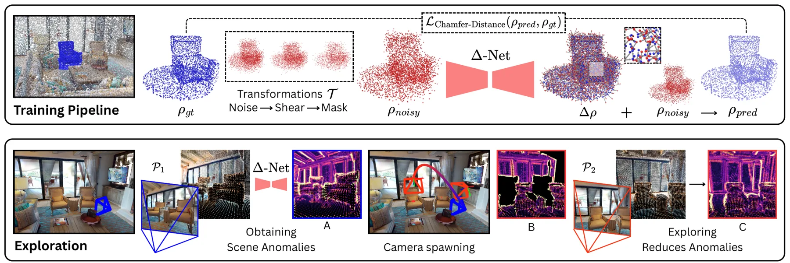
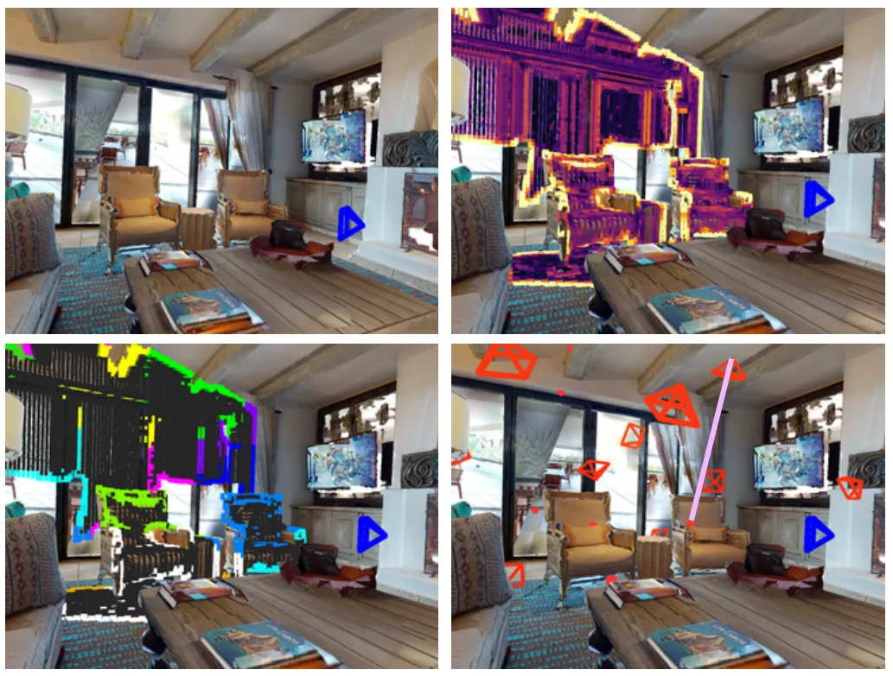
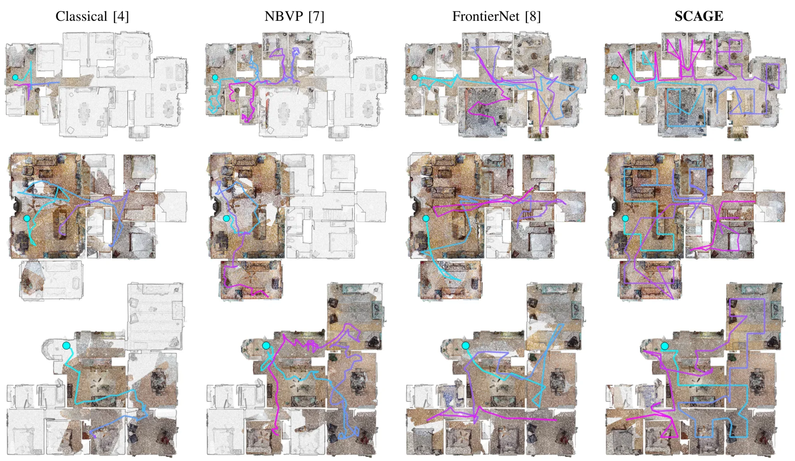
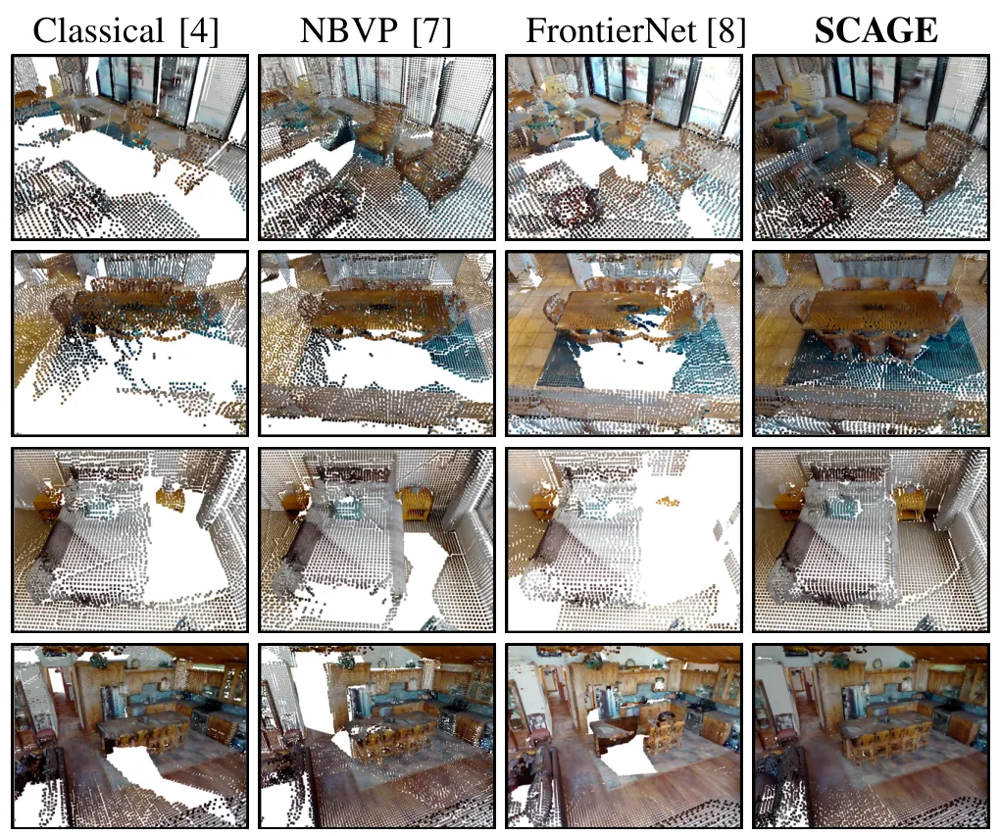
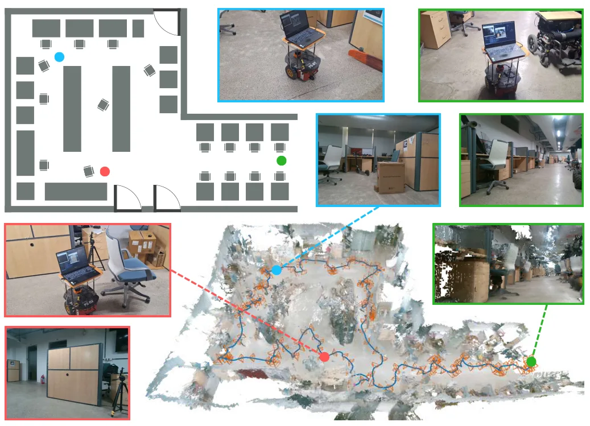
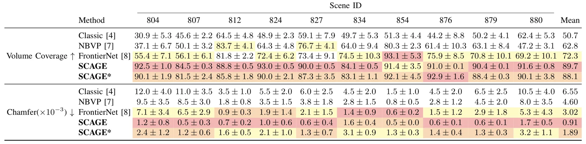
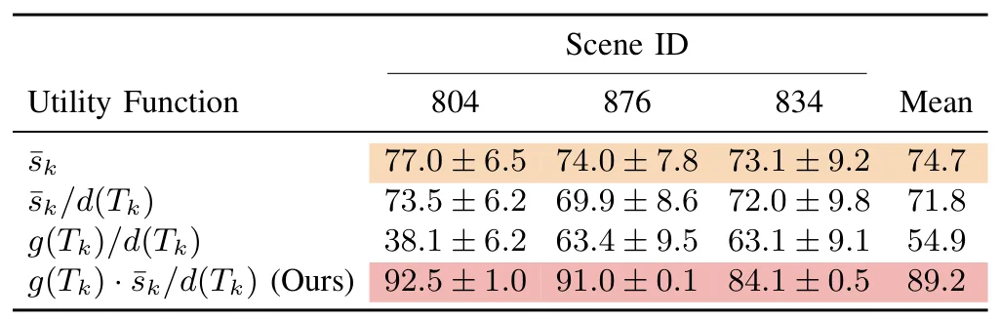

超越前沿：场景异常引导的自主探索Beyond Frontiers: Scene-Anomaly Guided Autonomous Exploration
把探索目标与最终地图质量直接耦合，适合主动 SLAM/重建；需核查结构先验的跨场景泛化、异常评分成本及定位误差影响。
一句话工作总结
以重建几何和室内结构先验之间的异常代替传统 frontier，主动选择能修补地图的观察位姿。
摘要
SCAGE 将未知环境探索重新表述为几何异常最小化，而非单纯追逐体素前沿。系统直接处理非结构化三维点云，利用对典型室内建筑结构的学习先验识别破碎墙面、局部桌面等与预期不一致的区域，并把这些异常作为下一视点选择信号，使机器人主动补全重建薄弱处。实验报告各场景约 90% 的体积覆盖率，并较先进基线获得更高的三维重建质量。
Autonomous exploration of unknown 3D environments is traditionally driven by coverage-maximizing geometric heuristics. However, these methods typically determine exploration targets without considering the underlying structural context. This leads to inefficient trajectories often limiting the fidelity of the final 3D reconstruction. To bridge the gap between spatial coverage and reconstruction quality, we introduce a novel paradigm: reframing exploration as a geometric anomaly minimization problem. We present SCAGE: SCene Anomaly Guided Exploration, a novel autonomous exploration framework that operates directly on unstructured 3D point clouds. Instead of blindly chasing volumetric boundaries, we equip the robot with a foundational understanding of standard indoor architecture. As the robot navigates, it continuously evaluates its live 3D observations against these learned expectations. When the incoming geometry contradicts the learned priors of a typical indoor environment, such as a fragmented wall or a partial table, the system flags these regions as scene anomalies. These geometric inconsistencies act as a guiding signal, naturally drawing the robot to investigate and resolve these structural anomalies from optimal vantage points. By actively targeting poorly reconstructed regions rather than just empty space, our approach seamlessly couples spatial discovery with high-fidelity mapping. Extensive evaluations demonstrate that SCAGE achieves superior volumetric coverage (~90% in all scenes) and higher 3D reconstruction quality compared to state-of-the-art baselines.
中文解读摘录
- 链接：arXiv 2607.15828 · 项目页
- 核心贡献：用室内结构先验发现破碎墙面、局部家具等重建异常，并据此选择视点，不再只追逐未知体素边界。
- 为什么重要：将主动探索与最终三维地图质量直接耦合，报告各场景约 90% 覆盖率及更好的重建质量。
- 待核查：重点看跨建筑泛化、定位漂移对异常判断的影响，以及与 information gain/NBV 方法的公平比较。
图表/页面预览

{kind=link}

{kind=link}

{kind=link}

{kind=link}

{kind=link}

{kind=link}

{kind=link}
